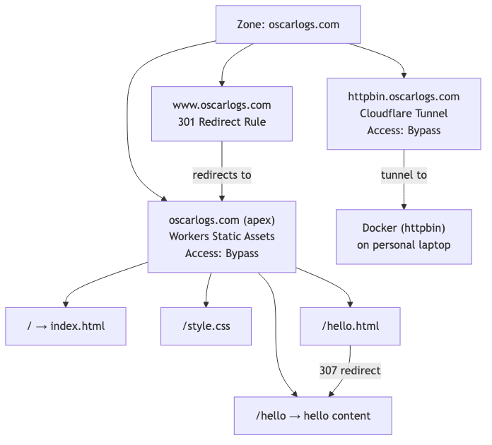
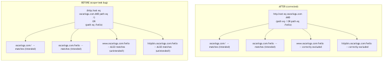
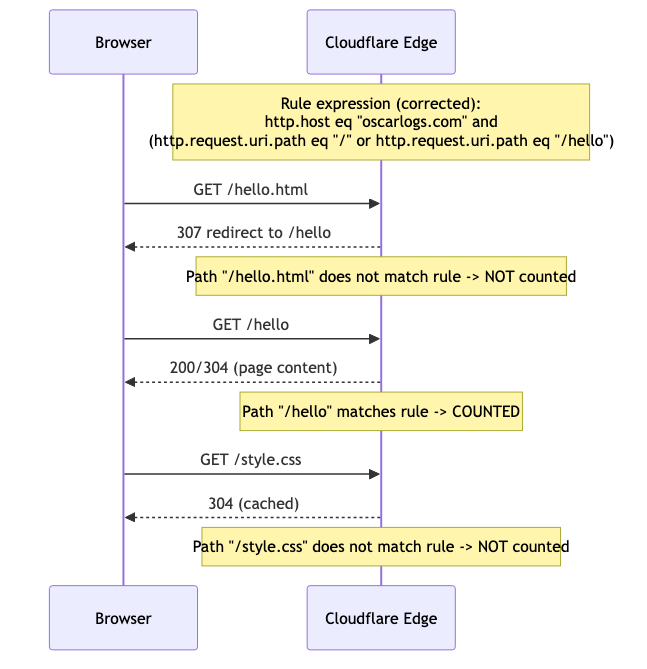

WAF Rate Limiting & Managed Challenge
A deep dive into a Cloudflare Rules language bug I found and fixed
This project started as a simple test: add a Managed Challenge to a Cloudflare Rate Limiting rule and watch it trigger. Along the way I found a real operator-precedence bug in my own rule expression, learned how Workers static-asset redirects interact with rate-limit path matching, and confirmed the challenge firing at the protocol level via Cloudflare's Privacy Pass token exchange.
Architecture
The zone serves three hostnames: the apex (static site), a redirecting www, and a Tunnel-backed origin for testing.

The Bug I Found
My original rate-limit expression used parentheses that looked correct but actually left one clause unscoped to a specific hostname, letting it silently match across the whole zone instead of just the apex.

Before (buggy):
(http.host eq "oscarlogs.com" and http.request.uri.path eq "/") or (http.request.uri.path eq "/hello")
After (corrected):
http.host eq "oscarlogs.com" and (http.request.uri.path eq "/" or http.request.uri.path eq "/hello")
Request Flow
Testing the rule revealed that a single button click actually generates three separate requests, only one of which the rule's path condition actually matches.

Lessons Learned
- Rate-limit rules count matching requests individually, including sub-resources like CSS — scope precisely or you'll accidentally challenge assets, not just page loads.
andbinds tighter thanor— always parenthesize the full intended group, not just part of it.- Workers static-asset redirects (
.html→ clean URL) create an extra hop that may or may not match your rule, depending on exactly which path you wrote. - Verify with real traffic (Security Events, response headers) rather than assuming an expression does what it visually appears to do.